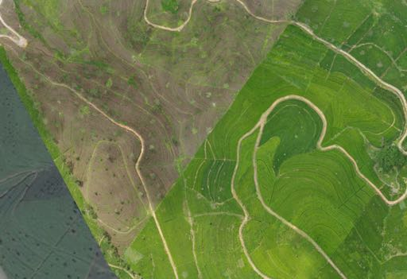
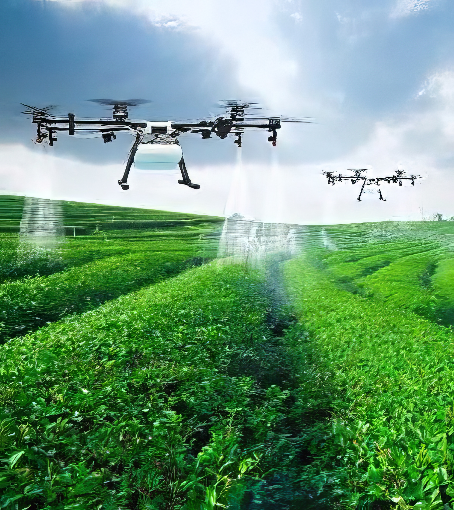
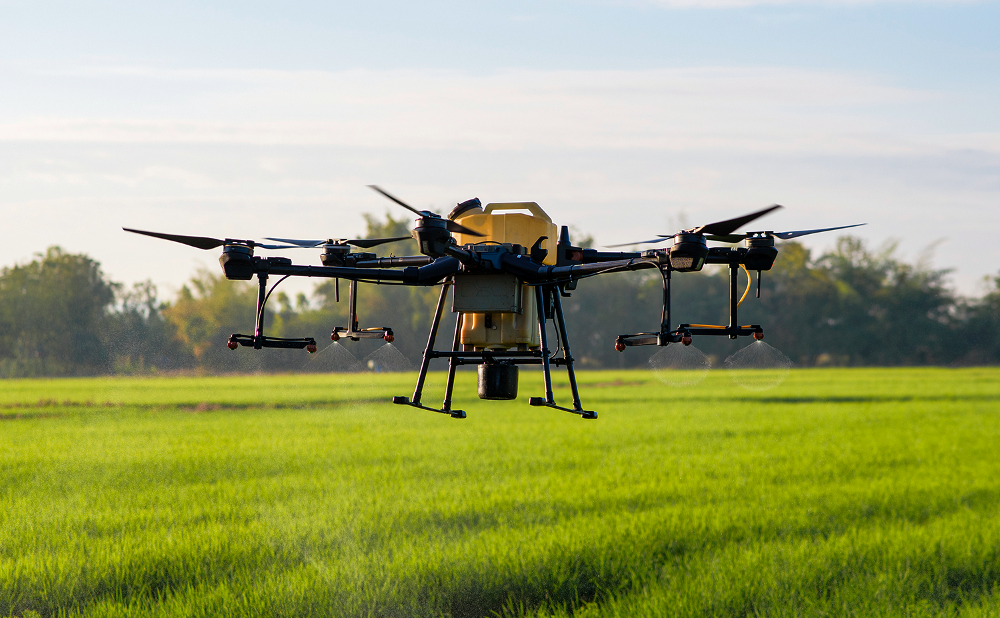
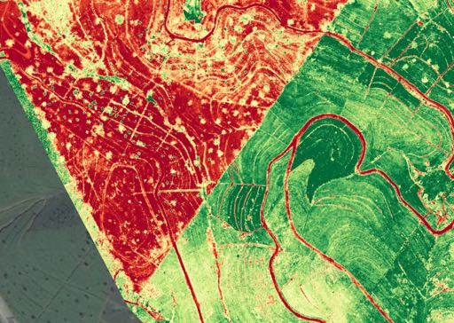
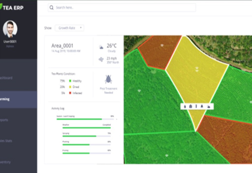

High Definition Aerial Imagery
Immediate and comprehensive high-definition aerial imagery providing invaluable analysis across large farming areas.
The first company globally to be certified in a country to operate fully autonomous aerial robots for crop spraying.

BRAIIN's Robotics division, Raptor300, is a market-leading agriculture and analytics services company providing end-to-end solutions to improve farming productivity. The platform provides users a dashboard with detailed maps of plantations and actionable insights.
The division has filed two provisional patents with the United States Patent Office that utilise Machine Learning/AI and Robotics for Unmanned Aerial Systems.

Fully autonomous agricultural drones covering 2-3 hectares per hour, carrying 15kg of chemicals.
Efficient spraying up to 15x the speed of humans with up to 30% cost savings on chemicals.
Reporting of efficiency metrics including path flown, plant coverage, and spray utilisation.
Two provisional patents filed with USPTO for ML/AI and Robotics for Unmanned Aerial Systems.
Comprehensive drone-based mapping, scanning, and analytics delivered through a single user-friendly dashboard.

Immediate and comprehensive high-definition aerial imagery providing invaluable analysis across large farming areas.

Effective monitoring of plant health through multi-spectral camera systems including FPV, thermal, and zoom installations.

Single dashboard for actionable insights. Includes 3D terrain mapping, real-time plant health index, water drainage mapping, and hazard identification.
BRAIIN provides customised agriculture drones for crop spraying — fully autonomous agricultural drones covering up to 2-3 hectares per hour, carrying 15kg of chemicals.
Custom installation of multi-spectral camera systems including FPV, thermal, and zoom. Quality control and reporting of efficiency metrics including path flown, plant coverage, and spray utilisation.
Get in touch to discuss autonomous crop spraying and aerial mapping for your operation.